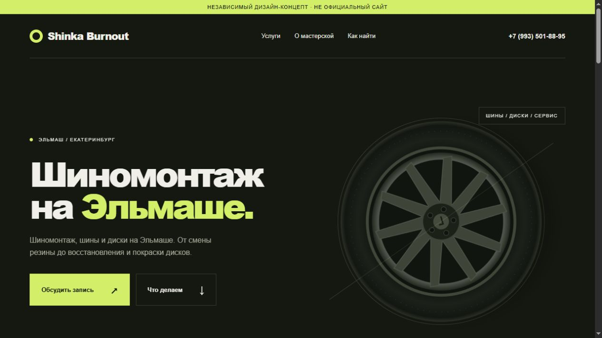

Скриншот сайта · открыть демо ↗Shinka Burnout
- Задача концепта
- Помочь водителю узнать о работах с колёсами, связаться с мастерской и найти въезд.
- Решения
- Услуги вынесены в отдельные блоки. Телефон есть в шапке, рядом с адресом — карта. На первом экране иллюстрация колеса, в разделе о мастерской — фотография.
- Что работает
- Мобильное меню, вопросы и ответы, ссылки на звонок, ВКонтакте и карту. Запись подтверждает сотрудник, системы бронирования нет.